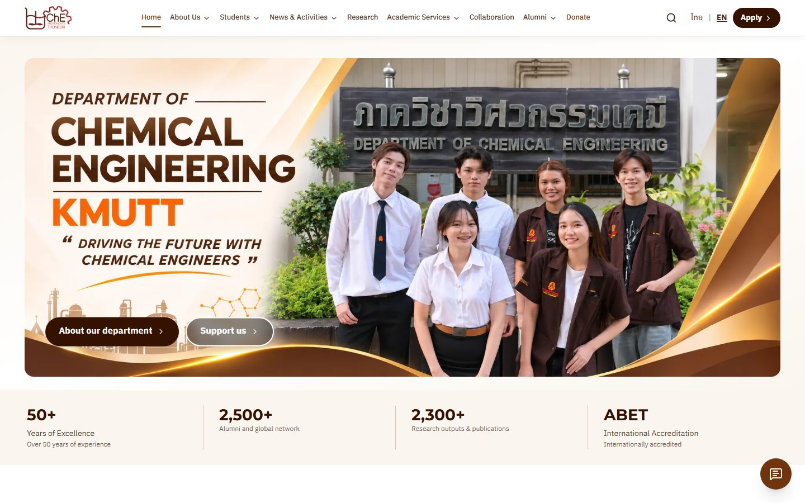
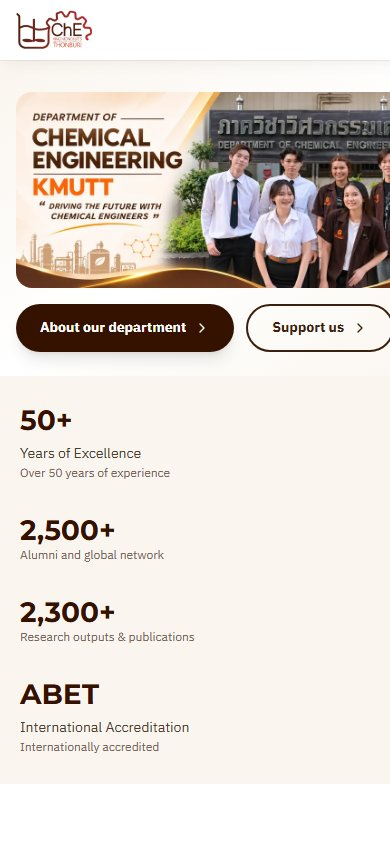

Dept. of Chemical Engineering, KMUTT · 2026 · In progress
A new website for my department
A bilingual Thai/English website for the Department of Chemical Engineering at KMUTT, with its own content-management system so staff can update everything themselves. It replaces the department's old WordPress site.
This is the staging version. The content team is still filling it in, so some items are placeholders, and it's hidden from search engines until the university launches it.


My part
- Worked out what the department needed: pages for programmes, people, research clusters, news, services, alumni and donations, in both languages.
- Took the design through several directions with my professor until one was approved, then had it turned into a design system so every page follows it.
- Tested every page and every admin screen, on desktop and phone, before each round of changes went out.
- Put the staging site online and set up accounts for the team now writing the content.
The code was written with AI-assisted coding (Claude Code). What I brought was knowing what the department and its staff actually needed, and checking that the result worked for them.
What staff can do
Edit without code
A visual editor lets staff click any text, image or banner on a page and change it, or add new text boxes, then preview before saving.
Run the content
News with photo galleries, events, faculty and staff profiles, programmes and research clusters are all managed from one admin panel.
Two languages side by side
Every item is stored in Thai and English together, so a page never shows a missing translation; it falls back to the other language.
Safe by default
Admins and editors have different rights, enforced on the server. Personal data such as alumni registrations can only be exported by admins.
Where it's going
The staging site runs on Vercel with a cloud PostgreSQL database and image storage. When the content is ready, the code and data will be handed over so the university can host the final site itself.